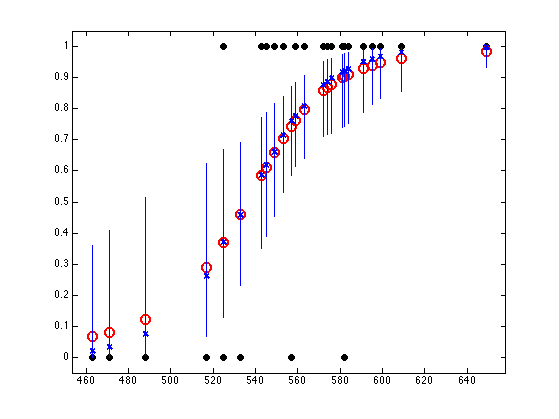

Logistic Regression on the SAT data using Bayesian inference
We use Laplace approximation to posterior and MC approximation to postpred
% This file is from pmtk3.googlecode.com stat = loadData('sat'); y = stat(:,1); X = stat(:,4); %pp = preprocessorCreate('standardizeX',true, 'addOnes', true); %model = logregFitBayes(X, y, 'preproc', pp); model = logregFitBayes(X, y); [yhat, prob, pCI] = logregPredictBayes(model, X); figure; plot(X, y, 'ko', 'linewidth', 2, 'MarkerSize', 7, 'markerfacecolor', 'k'); hold on plot(X, prob, 'ro', 'linewidth', 2,'MarkerSize', 10); % mean N = size(X,1); for i=1:N line([X(i,1) X(i,1)], [pCI(i,1) pCI(i,2)]); plot(X(i,1), pCI(i,3), 'bx', 'linewidth', 2); % median end axis_pct printPmtkFigure('logregSATdemoBayes')